Field report · world ecology
The question: how many dragons can a world, a region and a biome hold, and how does that change as rival predators and peoples compete for the same food? As the code is set now (the defaults), a world holds about 120,000 dragons of every kind and age today. A Sword Coast-sized region holds about 2,600. A 10,000 km² stretch holds about 5.7 on empty land and 6.8 on peopled land. The food alone, with no rival predators and no peoples, would feed about 23,000,000 on the same worlds. Most of that gap is the smaller predators that share the dragons' prey, and the dragon kinds living only in their own kinds of country. The peoples' hunting, their overkill of the herds and their killing of dragons each take a further part. Each kind of competition is now a setting in the viewer, so the owner can see what the world is set to and change it. The two tables just below give the numbers.
The model works out how many dragons the land can feed. Plants feed grazing herds, and the model lets a tenth of the herds be eaten each year. Peoples, giants and smaller predators take their part, and the dragons get what is left of their share. Where nobody else eats, that comes to about one dragon per 160 km² for every tonne of grazers per km². That figure is uncertain by a factor of about ten either way, mostly because nobody knows how much a dragon eats. On grassland it may be lower still, because the herd formula is fed more plant growth than it was built for.
Where nobody lives, the model's worlds hold about 0.82 dragons per 1,000 km² today (one per 1,200 km²), counting every kind and age. That is fewer than the food allows: most empty land is poor and cold, and dragon kinds live on only 44% of it.
Where peoples live, they cut the dragons three ways. They kill dragons. They have hunted out many of the big wild herds the dragons eat. And their hunters take their share of what is left before the dragons do. This round changed the killing to follow the owner's rulings. Stone-age peoples can reach the young wyrmlings but hardly the grown dragons, so they kill very few. The killing grows with weapons, numbers and herds to defend, and it never wipes a kind out. Today the killing and the lost herds together leave 10% to 41% of the dragons the land would hold if the peoples only hunted (in round 2 it was 1% to 3%). Counting the hunters' share of the food as well, the dragons keep fewer still: roughly 5.4% in farmers' country and 34% in herders'. How hard late peoples kill is a judgement: it is set so that a crowded farming district of the renaissance keeps a tenth of its dragons. The evidence would allow harsher or milder, and the owner can now change it in the viewer. Long ago it is the food, not the killing, that costs the dragons. 25,000 years ago, in hunters' country, the killing and the lost herds leave only 16%, almost all of it through the herds. The setting's hunting peoples are far denser than real hunter-gatherers, and they eat the dragons' own prey. Whether that is too harsh is a decision for the owner, with the options in an inbox draft.
For a game set in the late Middle Ages, the model gives about 19 dragons per 10,000 km² (a square 100 km on a side) in wild grassland, 21 in wild desert and 8.4 in wild mountains. In farmed country it gives up to 19. In the model, a region the size of the Sword Coast holds 690 to 9,700 dragons of every kind together where peoples live, and about 3,200 where nobody does. The literature puts a viable population at thousands. Only some of these regions reach that, and a single kind of dragon is a fraction of each count, so the dragons are best read as one population spread across the world.
The literature finds several parts of the model wrong or weak. The most important are these. The food channels in hunters' country rest on peoples far denser than real ones. The herd formula is fed the wrong kind of plant growth. The dragons' food intake is labelled as a reptile's when it behaves like something between a reptile and a mammal. Section 9 lists the changes, each with its evidence and how it would move the numbers.
How many dragons can a world, a region and a biome hold, and how does that change as other mouths compete for the same food? Each row below adds one kind of competition, and each is a setting in the code (the lineages settings in the viewer), with the default marked. The numbers are for the present, as medians over the six worlds at roll 7000. Dragons of every kind and age are counted, wyrmlings included. A Sword Coast-sized region (3.9 million km²) is taken at the whole land's average density.
What the food would feed, if dragons lived in every land cell:
| Competition (each row adds one) | Setting (default) | World | Region | Empty land, per 10,000 km² | Peopled land | Grassland | Forest | Desert |
|---|---|---|---|---|---|---|---|---|
| Dragons alone: no rival predators, no peoples | rivals none | 23,000,000 | 480,000 | 93 | 1,500 | 2,100 | 1,100 | 470 |
| + rival predators (the smaller carnivores of the guild) and giants | rivals ×1 (default) | 3,700,000 | 79,000 | 15 | 250 | 350 | 190 | 79 |
| + the peoples' hunters take their game first | game share all (default) | 2,000,000 | 40,000 | 13 | 140 | 210 | 46 | 62 |
| + the peoples have overkilled the wild herds | overkill 60% (default) | 1,100,000 | 23,000 | 12 | 74 | 110 | 24 | 35 |
Table H1. Dragons the yearly food would feed, from the model's own food budget on the pressure-off and persecution-off runs. World and region: dragons. The rest: dragons per 10,000 km². Persecution kills dragons but does not change their food, so it has no row here.
What the model's worlds hold, once the dragon kinds' habitats, their viability and the peoples' killing are counted:
| Competition | Setting (default) | World | Region | Empty land, per 10,000 km² | Peopled land | Grassland | Forest | Desert |
|---|---|---|---|---|---|---|---|---|
| Peoples hunt, but neither overkill nor kill (pressure off) | overkill 0%, press ×0 | 420,000 | 8,700 | 6.8 | 28 | 27 | 11 | 31 |
| + overkill of the wild herds (persecution off) | overkill 60%, press ×0 | 180,000 | 3,800 | 5.7 | 11 | 11 | 3.3 | 19 |
| + the peoples kill dragons: the model as it stands | press early ×1, late ×1 (default) | 120,000 | 2,600 | 5.7 | 6.8 | 6.0 | 1.2 | 16 |
| … if the peoples kill more gently | press ×0.25 (estimated) | 150,000 | 3,200 | 5.7 | 9.0 | 8.6 | 2.1 | 18 |
| … if they kill harder | press ×4 (estimated) | 83,000 | 1,800 | 5.7 | 3.8 | 3.1 | 0.60 | 11 |
Table H2. Dragons the model's worlds hold now, in the three arms of runs. The last two rows were not run: they rescale each cell of the model's runs by what the dragons' life table keeps under a gentler or harsher kill, holding everything else fixed. In bold: the defaults, the world as the code sets it.
Three things set the numbers.
The rest of the paper explains each row. Section 2 sets out the food chain and the age-by-age kill. Section 5 splits the loss by cause, era and way of life. Section 9 lists what the literature says should change.
We trace the model's dragon density from plant production to dragons per km² and test each step against the published literature. Where nobody else eats, the model gives 1 dragon per 159 km² per t/km² of prey: a 10% yearly offtake of McNaughton et al.'s herbivore biomass, a 16.8% apex share of the predator guild after Carbone et al.'s Cretaceous size classes, and 2.7 t of prey a year per dragon from Nagy et al.'s reptile metabolic rate averaged over every age. A one-at-a-time sensitivity analysis puts the range at ×0.064 to ×7.7 (the top an upper bound), with the intake law the largest unknown, and the above-ground share of plant production lowers density on grassland by up to a further factor of four; a reading that follows the papers at every step gives ×1.3. In a paired sweep of 9 runs with the peoples' pressure on and off, nobody's country holds 0.82 dragons per 1,000 km² now, limited by poor land and by where dragon kinds live, not by pressure; peopled country holds 0.18 to 2.5, 10% to 41% of the pressure-off density. Persecution is now a kill by age class against the dragons' slow breeding, growing with the peoples' numbers, herds and a calendar proxy for their tech. Its form follows Ripple et al., Cardillo et al. and Crouse et al.; its size is a judgement (dense renaissance farmers keep 10%). Before the late eras it is slight, and the loss in peopled country comes through the dragons' food: overkill of the wild herds, and the hunters' take, which the setting's dense hunting peoples inflate (foragers' country keeps 16% 25 kyr ago). The model's food formula sits between mammalian and reptilian density lines and inside Marshall et al.'s interval for T. rex at the prey levels where most dragons live, while the realised density of empty land is below the bottom of that interval; but on Farlow's reasoning reptile-rate dragons at a mammal guild's prey ratio imply something other than food holds them down. A Sword Coast-sized region holds hundreds to thousands of dragons of all kinds, and a single kind a fraction of that, mostly below the thousands a viable population needs. We give a game-present table by biome and settlement (an extrapolation) and thirteen model changes with their evidence and expected effects.
How many dragons can a world, a region and a biome reasonably hold, and how does that number shift with competition: rival predators, peoples hunting the same game, and the peoples killing dragons? For a fantasy setting the question is usually answered by fiat: as many as the story needs. A world built by simulation cannot do that. It has to say how many dragons live in a forest, on a steppe or in a farmed valley, and why, and the answer has to survive a reader who knows how real large predators live. This paper asks whether one such model's answer does.
The model. A fantasy-world generator builds planets by simulation. Plate tectonics, climate, rivers and erosion run over half a billion to two billion years and leave a planet with continents, weather and vegetation. On that planet a second simulation runs the history of its peoples and great beasts over the last several million years. Before 300,000 years ago (the deep epoch, before today's plates) it works coarsely; from 300,000 to 30,000 years ago it steps through the ice ages; over the last 30,000 years it runs a finer recent pass. The peoples are a Dungeons & Dragons-style roster (humans, elves, dwarves, halflings, orcs, goblins and some twenty more), each of which forages, herds or farms in a mix of its own and spreads over the land the climate allows. The great beasts include several kinds of dragon, each with its own preferred terrain, and the giants.
How the model sets dragon numbers. It treats dragons as the top of a food chain. Plant growth sets how many grazers the land carries; a share of the grazers can be eaten each year; the peoples' hunters, the giants and the smaller predators take their parts; the dragons get the rest of their share and are as many as that food feeds. Where peoples live, they also kill dragons, more as their weapons and numbers grow, and the dragons breed back slowly. Section 2 sets out the chain step by step with each step's source.
What this paper does. It answers the question in a short headline table of density by scale and competition (above), each row tied to a setting in the code, with the defaults marked. Behind that table it (i) checks every step of the chain against the ecological literature it rests on, (ii) asks how much each uncertain constant moves the result (Section 3), (iii) measures the model's dragon densities in a paired set of simulation runs with and without the peoples' pressure (Sections 4 and 5), (iv) extrapolates them to the late-medieval world a typical game is set in and to a region the size of a well-known game setting (Sections 6 and 7), and (v) says where the literature finds the model wrong or weak and what should change (Sections 8 and 9). The literature is the judge throughout. No real animal is a dragon, so every comparison is an extrapolation, from lizards, crocodiles, large mammalian carnivores and the tyrannosaurs, the nearest real analogue in size and way of life.
Each step takes the one before it as input. The numbers are the model's own constants. Where the literature says a step is weak, the step says so here, and Section 9 says what should change.
| Step | Model value | Source |
|---|---|---|
| Grazers from NPP | log10 B = 1.52 log10 NAP − 4.79 (kJ) | McNaughton et al. 1989, p. 143; fed whole-plant herb NPP, not above-ground; unit factors unsourced except 7 kJ/g (Farlow 1993, p. 172) |
| Yearly offtake | 10% wild + 10% stock | unsourced; about half of large-herbivore production (Coe et al. 1976, Table 1; Farlow 1993, eq. 6) |
| A person's game | 0.32 t/yr forager, 0.032 t/yr others | unsourced |
| Guild split | 83.2% smaller, 16.8% dragons | Carbone et al. 2011, Table 1, p. 2683; M0.75 weighting from Carbone & Gittleman 2002, p. 2274 |
| A dragon's food | 10,400 kcal/day = 2.7 t/yr | Nagy et al. 1999, Table 2, eq. 32, p. 261, extrapolated; averaged over all ages; 85% assimilation unsourced |
| Density, nobody else eating | 1 per 159 km² per t/km² | the product of the above |
| Overkill pressure | 1 − exp(−N/0.05); herds cut by up to 60% | a judgement after Sandom et al. 2014 (species, not biomass) |
| Persecution | by age class on the dragons' life table; kill effort = 0.0028 × people per km² × means; wyrmlings always reachable, adults only at high tech | the form: slow breeders cannot make up a kill (Ripple et al. 2014, p. 1241484-1; Cardillo et al. 2004, pp. 0911–0912), and the long-lived stages carry the growth (Crouse et al. 1987, p. 1417); the kill's size, the means, the vulnerabilities and the era calendar are judgements |
The headline, 1 dragon per 159 km² for each t/km² of prey where nobody else eats, is a product of a few constants. Each row below changes one of them to a value from a paper consulted (or to an illustrative value, where marked) and gives the factor on dragon density. The last row is different in kind: it changes how much prey a given amount of plant growth yields, so it moves density at a given place but not the headline per tonne of prey. Nothing is re-run: density is proportional to each of these factors, so the arithmetic is exact.
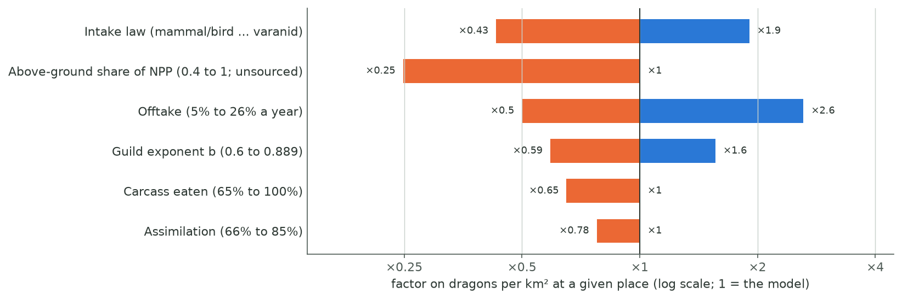
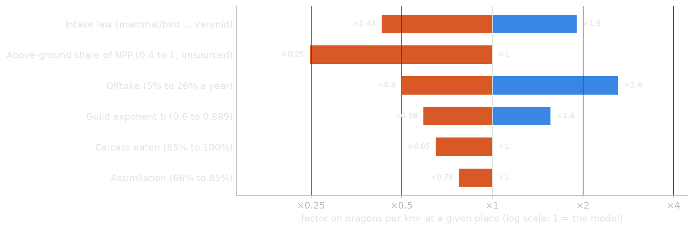
| Constant | Value | Source | Factor on density | 1 dragon per … km² at 1 t/km² |
|---|---|---|---|---|
| The model | reptile rate, b = 0.75, 85%, whole carcass, 10%/yr | Section 2 | ×1 | 159 |
| Intake law (averaged over every age) | Varanid lizards, 1.07 M0.735 (22% of a mammal; McNab's own figure for dinosaurs) | McNab 2009, pp. 12185, 12187 | ×1.9 | 84 |
| Dinosaur-like, 31% of a mammal (Barrick & Showers's estimate) | Barrick & Showers 1999, as reported by McNab 2009, p. 12187 (not consulted directly); McNab's own estimate for dinosaurs, 22% of a mammal, is the varanid row | ×1.4 | 110 | |
| All lizards, 0.190 M0.916 | Nagy et al. 1999, eq. 33, p. 261 | ×0.68 | 230 | |
| Varanidae, 0.208 M0.915 | Nagy et al. 1999, eq. 36, p. 261 | ×0.63 | 250 | |
| Mammals, 4.82 M0.734 | Nagy et al. 1999, Table 2, p. 260 | ×0.43 | 370 | |
| Birds (flying endotherms), 10.5 M0.681 | Nagy et al. 1999, Table 2, p. 260 | ×0.43 | 370 | |
| The model's law, a species at 170% of it | Nagy 2005, p. 1622 | ×0.59 | 270 | |
| The model's law, a species at 30% of it | Nagy 2005, p. 1622 | ×3.3 | 48 | |
| Guild weighting exponent b (apex share) | 0.6 (9.9%) | Carbone et al. 2007, p. 364: within large-prey hunters | ×0.59 | 270 |
| 0.66 (12.3%) | Carbone & Gittleman 2002, p. 2274: fitted | ×0.73 | 220 | |
| 0.79 (19.2%) | Carbone et al. 2007, Table 1: across carnivores | ×1.1 | 140 | |
| 0.85 (23.3%) | Carbone & Gittleman 2002, p. 2274: lower confidence limit | ×1.4 | 110 | |
| 0.889 (26.2%) | Nagy et al. 1999, eq. 32: the dragons' own exponent | ×1.6 | 100 | |
| Assimilation | Nagy's conversion: 16.8 kJ/g dry matter, food 30% dry matter | Nagy et al. 1999, pp. 263–264 | ×0.85 | 190 |
| 66% | Carbone et al. 2007, p. 364 | ×0.78 | 200 | |
| Share of a large carcass eaten | 91% / 78% / 65% | Carbone et al. 2007, p. 367 | ×0.91 / ×0.78 / ×0.65 | 170 / 200 / 240 |
| Yearly offtake | 5% a year | illustrative | ×0.50 | 320 |
| Farlow's turnover at 1,000 kg, 14% | Farlow 1993, eq. 6, p. 172 | ×1.4 | 120 | |
| Coe's median production/biomass, 20% | Coe et al. 1976, Table 1 | ×2.0 | 80 | |
| Farlow's turnover at 100 kg, 26% | Farlow 1993, eq. 6, p. 172 | ×2.6 | 61 | |
| The offtake rows above 10% let the whole guild, peoples included, eat all of the herds' production: Farlow's best case (p. 171), which he says real communities do not reach (p. 176). They are upper bounds. | ||||
| Prey from plant growth: above-ground share f of the NPP fed to McNaughton's fit | f = 0.7 / 0.5 / 0.4 (prey × f1.52) | McNaughton et al. 1989, pp. 142–143; f itself not sourced | ×0.58 / ×0.35 / ×0.25 | unchanged: a factor on prey, not on dragons per t/km² |
Table 1. One constant at a time. The intake rows re-average each law over the same spread of ages. Carbone et al.'s 66% assimilation and their exponents are for mammalian carnivores, and 78% is the middle of their 65% to 91% range, not a value they give; Nagy's 16.8 kJ/g is his figure for mammalian carnivores' food. Farlow's two intake equations give a cross-check: at 1.65 t his ectotherm rate (eq. 8, p. 187) is 1.9 t of prey a year and his endotherm rate (eq. 7, p. 172) 8.7 t, against the model's 4.1 t for a dragon of that mass: between his two cases.
Joint cases (each the product of its rows):
Three things follow. First, the intake law alone moves density by a factor of four (×0.43 to ×1.9), more than the 1.2 to 1.7 times between the model and Carbone & Gittleman's prey-based line (Section 5.4). Flight would push intake toward the bird line (fewer dragons); no paper consulted gives a daily cost of flight. Second, the unsourced generous choices (85% assimilation, whole carcasses) and the reptile-fit intake pull in opposite directions; a reading that follows the papers at every step (the first joint case, with McNab's own dinosaur intake) lands at ×1.3, close to the model. The closeness is partly a coincidence: an intake law stretched far past its data happens to offset two unsourced generous choices. Third, the headline per tonne of prey is uncertain mostly through the intake law, but the prey itself carries a second, one-sided unknown: the above-ground share, which can only lower density at a given place, and most on grassland. Counting it, the lowest joint case falls from ×0.064 to ×0.016. The model's 1 per 159 km² per t/km² is therefore a central value inside a band of roughly a factor of ten either way (the top of it an upper bound), with a further factor of up to four downward on grassland from the prey formula; it is not a measurement.
Runs. Six worlds, each with four rolls of its history and peoples (7000 to 7003), on a global grid of cells of about 3,113 km² each, with the D&D-style roster of peoples and creatures: 9 runs with the model as it stands. Each was run a second time with the peoples' pressure switched off, on the same world and roll (9 runs). A third arm switches off only the persecution channel and keeps the overkill of wild herds, on the six worlds at roll 7000 (6 runs). Every run used the same version of the model, the one with the persecution rule of Section 2, step 7, and with farmers' numbers following the land's plant growth (Section 4, below). The six worlds are the generator's standard test planets; a roll is an independent draw of the history of peoples and creatures on the same planet.
Two terms used throughout.
Kinds of country. At each era (31, 29, 25, 10 and 5 kyr ago, kyr meaning thousand years, and the present) each land cell goes in one of five classes. Nobody's country holds fewer than 0.02 people per km², summed over every people. Peopled land goes to foragers', herders' or farmers' country by which way of life holds the most people there; a people's way of life comes from its land-use mix. Land held mostly by peoples who have no named way of life in the tree (dwarves, dragonborn, drow, kobolds, troglodytes, aarakocra, tortles, sea elves, tritons) is others' country. It is easy to overlook: it is about 28% of the land now.
Measures. "Dragons per 1,000 km²" is the expected number of dragons of every kind and age in a class's cells over the class's area, pooled over the runs. Cells where no dragon kind lives count as zero, as they would in a survey. For each run the same figure is also computed on its own, giving the run-by-run spread. The paired ratio for a class is (dragons per 1,000 km² with the pressure) ÷ (the same, pressure off) for one world and roll; we give the median and range of the 24 ratios. Switching the pressure off changes the peoples a little (their land use reads the herds), so a class's area differs between the arms of a pair: now, a peopled class's area with the pressure is 75% to 160% of its area without it, run by run (herders' country, the smallest class, moves most). The ratios therefore compare densities, not counts.
How many people. A people's density in a cell is its way of life's number × a factor for how productive the land is, measured against fixed yardsticks, so a poorer planet holds fewer people. Foragers read the land's wild food, herders the growth of grass and browse, and farmers (new in this version) the total plant growth (net primary production). The factor is (land ÷ yardstick)0.75, a mildly bent curve. Poor land holds fewer people but is not empty: half as productive land holds 59% as many people. The yardsticks (2.83 for wild food on a 0-to-5 score, 263 and 330 g of carbon per m² a year for grazing and total growth) were set so that each way's average density over this sweep's land stays at its number. They are not measurements.
Occupancy. A cell is occupied when at least one dragon kind lives there in the model (its habitat suits the kind and the population passes the model's viability test: a check that the kind's population, counting pockets linked by flight, is large enough to last; Section 7). Where nobody lives, a cell's density comes near its food-fed density if the cell is occupied and is zero if not; the occupied share is reported with each table (Section 5.3).
The steps over time. Each run's planet-wide count was read from its time series on either side of 30 kyr ago (where the run hands over from its ice-age pass to its finer recent pass) and of 300 kyr ago (where the present plates begin), in both arms.
The literature lines in Section 5.4 are evaluated at the dragons' ecological mass, 1.65 t, with each paper's own units; the arithmetic is ours.
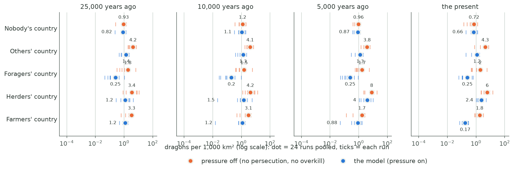
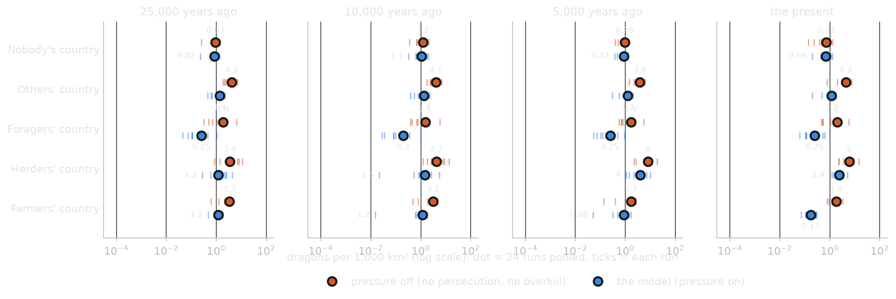
| Country | Land now | 25 kyr ago | 10 kyr ago | 5 kyr ago | Now | Now, run range | Now, pressure off |
|---|---|---|---|---|---|---|---|
| Nobody's | 21% | 0.89 | 1.2 | 0.93 | 0.82 | 0.20 to 1.5 | 0.72 |
| Others' | 28% | 1.4 | 1.3 | 1.3 | 1.1 | 0.19 to 1.7 | 4.3 |
| Foragers' | 23% | 0.24 | 0.19 | 0.24 | 0.23 | 0.055 to 0.61 | 2.0 |
| Herders' | 5.0% | 1.7 | 2.2 | 4.6 | 2.5 | 1.0 to 6.1 | 6.0 |
| Farmers' | 23% | 1.2 | 1.2 | 0.87 | 0.18 | 0.072 to 0.29 | 1.8 |
| All land | 100% | 0.94 | 0.96 | 0.92 | 0.70 | 0.27 to 1.2 | 2.6 |
Table 2. Dragons of every kind and age per 1,000 km², pooled over 9 runs (pressure off: the same 9 worlds and rolls).
| Country | 25 kyr ago | 10 kyr ago | 5 kyr ago | Now | Now, range over the pairs |
|---|---|---|---|---|---|
| Nobody's | 94% | 95% | 93% | 99% | 50% to 160% |
| Others' | 33% | 33% | 34% | 27% | 23% to 39% |
| Foragers' | 16% | 11% | 16% | 14% | 5.3% to 27% |
| Herders' | 42% | 41% | 49% | 41% | 27% to 54% |
| Farmers' | 33% | 34% | 41% | 10% | 4.6% to 38% |
| All land | 35% | 37% | 39% | 29% | 22% to 32% |
Table 3. The share of the pressure-off density the peoples leave, over time: the median over the pairs of runs (same world and roll, pressure on and off) of the ratio of the two densities. A dash: too few pairs have that kind of country then. The peoples' own hunting of the wild herds is in both arms, so it is not counted here (Table 4).
Nobody's country holds 0.82 dragons per 1,000 km² now, about 1 per 1,200 km², and 0.89 at 25 kyr ago. At its mean prey of 0.24 t/km² the headline would give 1.5 per 1,000 km²; the land holds less. Two things set it: most empty land is poor (Section 5.3), and dragon kinds live on only 44% of it, leaving 17% of the dragons' food uneaten. Switching the pressure off barely changes it (median ratio 99%), but run by run it swings from 50% to 160%: the empty land is patchy, and the dragons' viability test passes or fails on whole pockets. That swing is the noise floor of every ratio in this section.
Peopled country holds 0.18 to 2.5 dragons per 1,000 km² now. The peoples leave 10% of the pressure-off density in farmers' country, 14% in foragers', 27% in others' and 41% in herders' (medians over the pairs; Table 3). Before the late eras the picture is different. At 25 kyr ago, in the stone age, farmers' country keeps 33%, herders' 42%, others' 33%, and foragers' only 16%. Section 5.2 shows why: the early loss is not the peoples killing dragons but the peoples' hunting of the dragons' prey. Over all land the planet holds 130,000 dragons now on average (49,000 to 210,000 by run), against 470,000 with the pressure off (210,000 to 1,000,000).
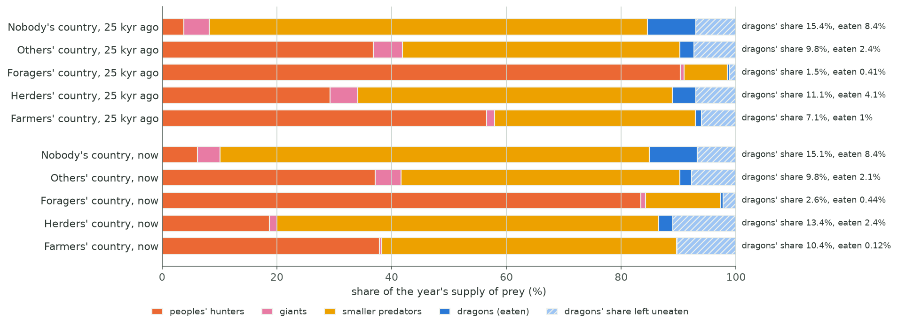
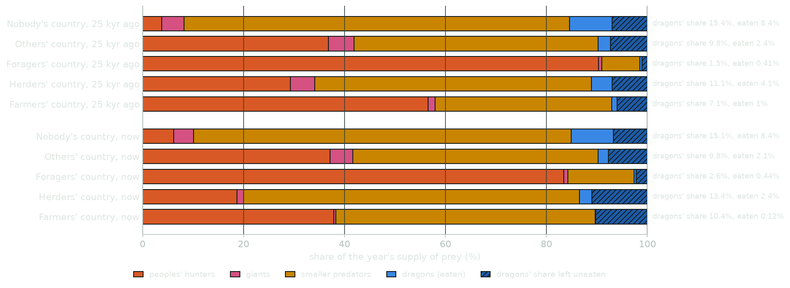
Where nobody lives, the smaller predators take 75% of the supply now and the dragons' share is 15%; the dragons there eat 9.0% of the supply, 60% of their share. In foragers' country the peoples' hunters take 91% of the supply at 25 kyr and 84% now. In farmers' country they take 38% now, while livestock makes up 61% of the supply there. Over all land the dragons eat 1.0% of the supply now.
The peoples reach dragons through three channels (Section 2, step 7): they persecute them (the kill), they have overkilled the wild herds the dragons eat (60% of the big herbivores gone where peoples press the land), and their hunters take their share of the herds' yearly surplus before the dragons do. The third arm of runs, with persecution off but overkill kept, separates the first two on the six worlds at roll 7000. The third channel is in every arm, so its size is read from the pressure-off runs: the share of the surplus the hunters leave.
| Era | Country | Persecution leaves | Overkill leaves | Hunters' take leaves | All three |
|---|---|---|---|---|---|
| 25 kyr ago | Nobody's | 100% (100% to 100%) | 94% (92% to 97%) | 95% (92% to 98%) | 89% |
| 25 kyr ago | Foragers' | 99% (94% to 100%) | 13% (4.5% to 33%) | 18% (7.4% to 28%) | 2.3% |
| 25 kyr ago | Herders' | 100% (99% to 100%) | 43% (32% to 73%) | 82% (65% to 94%) | 35% |
| 25 kyr ago | Farmers' | 85% (82% to 90%) | 48% (25% to 76%) | 40% (31% to 49%) | 16% |
| 25 kyr ago | Others' | 99% (99% to 99%) | 33% (25% to 39%) | 82% (55% to 85%) | 27% |
| 10 kyr ago | Nobody's | 100% (100% to 100%) | 95% (92% to 95%) | 96% (89% to 98%) | 91% |
| 10 kyr ago | Foragers' | 98% (94% to 99%) | 8.0% (5.4% to 21%) | 19% (7.2% to 26%) | 1.5% |
| 10 kyr ago | Herders' | 100% (99% to 100%) | 41% (0.79% to 46%) | 79% (77% to 94%) | 33% |
| 10 kyr ago | Farmers' | 84% (75% to 89%) | 45% (4.1% to 95%) | 37% (29% to 48%) | 14% |
| 10 kyr ago | Others' | 99% (99% to 99%) | 34% (23% to 38%) | 82% (54% to 85%) | 27% |
| 5 kyr ago | Nobody's | 100% (100% to 100%) | 93% (90% to 94%) | 94% (88% to 97%) | 87% |
| 5 kyr ago | Foragers' | 98% (96% to 99%) | 13% (6.3% to 30%) | 23% (8.1% to 30%) | 2.8% |
| 5 kyr ago | Herders' | 97% (91% to 99%) | 56% (40% to 62%) | 76% (67% to 91%) | 41% |
| 5 kyr ago | Farmers' | 81% (75% to 91%) | 55% (41% to 100%) | 48% (43% to 50%) | 22% |
| 5 kyr ago | Others' | 99% (98% to 99%) | 35% (21% to 38%) | 82% (53% to 85%) | 28% |
| Now | Nobody's | 100% (100% to 100%) | 100% (50% to 160%) | 93% (81% to 97%) | 95% |
| Now | Foragers' | 71% (41% to 76%) | 20% (7.7% to 58%) | 26% (11% to 31%) | 3.6% |
| Now | Herders' | 67% (41% to 84%) | 61% (52% to 99%) | 82% (64% to 92%) | 34% |
| Now | Farmers' | 16% (11% to 19%) | 66% (48% to 82%) | 50% (44% to 54%) | 5.4% |
| Now | Others' | 77% (75% to 84%) | 35% (31% to 42%) | 81% (42% to 84%) | 22% |
Table 4. What each channel leaves of the dragons, by era and kind of country: medians over the six worlds at roll 7000, with the range over the worlds in brackets. Persecution: model ÷ persecution-off. Overkill: persecution-off ÷ pressure-off. This includes the interaction with the hunters: once overkill has thinned the herds, the hunters' fixed need takes a larger share of what is left. A 60% cut to the herds alone could not leave less than 40%. Hunters' take: the share of the herds' yearly surplus the peoples' hunters leave, in the pressure-off runs. That is a share of the food, not a ratio of densities, and the dragons' habitat, viability and uneaten food loosen the link. "All three" multiplies the three medians, so it is a rough guide, not a measured number. Nobody's country is the control. Its range shows the noise of a single world: the overkill there now runs from 50% to 160%, so an overkill or persecution ratio inside that band in one world is not a measured effect.
In plain words: until the late eras the peoples kill few dragons, but they eat the dragons' food. At 25 kyr ago persecution leaves 99% of the dragons in foragers' country and 85% in farmers'. The two food channels leave far less: in foragers' country overkill leaves 13% and the hunters' take 18%. The two compound because the hunters eat first: once overkill has cut the herds, the hunters' fixed need takes nearly all of what is left. Only now, with renaissance tech, does persecution become the largest single channel in farmers' country, leaving 16%, against 71% in foragers' and 67% in herders'. Now, the overkill medians in herders' and farmers' country (61% and 66%) lie inside the control's noise band, so the present split between overkill and persecution there is not resolved by these six worlds. Whether the food channels are this strong in truth is open: the D&D hunting peoples are 10 to 100 times denser than real hunter-gatherers, and every tonne they hunt comes out of the dragons' own prey (Section 9; inbox draft "forager offtake overstated").
One might expect the peoples' pressure to explain the shortfall of dragons on rich empty land, biting a little even below the 0.02 people per km² threshold. It does not. Over all 9 runs, the mean pressure in nobody's country now is 0.0057 (at most 0.33 in any cell), and on its rich land it is 0. The shortfall has two parts. First, most empty land is poor: 37 of its 39 million km² per run carries under 1 t/km² of prey (mean 0.13 t/km², median latitude 62°), where the food feeds only 0.68 dragons per 1,000 km². Second, occupancy: only 44% of nobody's land holds any dragon kind, and 17% of the dragons' food there lies in cells no kind lives in. The gap is widest on poor land, where 42% of cells are occupied; on middling land 92% are, and on the rich empty land (3 t/km² of prey and more) 97%, with 97% suiting any kind at all. By biome, the kinds mostly miss wild forest (37% of cells occupied), tundra (57%) and grassland (88%) (Section 6). Where a kind does live, the dragons reach part of what the food feeds: 22 per 1,000 km² against a food-fed 31 in occupied rich cells, and 7.7 against 9.9 on middling land (the remaining gap on rich land is not traced here). So where nobody lives, food sets density where dragons live, and habitat sets where they live. Counted in dragons rather than per km², though, the shortfall is split. Of the dragons the empty land's food would feed but that are not there, rich land, only 1.2% of the empty land, accounts for 20% and poor land for 62%. On rich land about 5% of its share lies in cells no kind holds, and the rest in occupied cells that reach only 71% of their food, for reasons not traced here; that untraced gap alone is 19% of the whole. If every empty cell held dragons at its food-fed density, nobody's country would hold 1.7 times as many dragons as now.
| Now, pooled over 24 runs | Poor (under 1 t/km²) | Middling (1 to 3) | Rich (3 and over) |
|---|---|---|---|
| Nobody's | 0.31 (0.68); 42% | 7.1 (9.7); 92% | 21 (31); 97% |
| Others' | 0.19 (0.49); 72% | 1.5 (6.2); 55% | 3.1 (19); 52% |
| Foragers' | 0.018 (0.13); 40% | 0.24 (1.0); 57% | 0.89 (6.2); 58% |
| Herders' | 1.3 (2.0); 95% | 3.2 (9.8); 82% | 3.7 (33); 63% |
| Farmers' | 0.021 (0.46); 36% | 0.19 (7.0); 35% | 0.26 (26); 28% |
| Mean prey, nobody's country | 0.13 t/km² | 1.6 t/km² | 5.2 t/km² |
| Land in nobody's country (all runs) | 37 M km² per run | 1.5 M km² per run | 0.45 M km² per run |
Table 5. Dragons per 1,000 km² with the pressure, then in brackets the food-fed density, then the share of cells any dragon kind occupies. A dash marks a band with fewer than 20 cells.
Rich land feeds far more dragons than poor land (the food-fed column). Where nobody lives, occupancy is lowest on poor land; in peopled country it follows no single trend with prey. Where people live, overkill, the hunters' take and (now) persecution then cut what is left (Table 4).
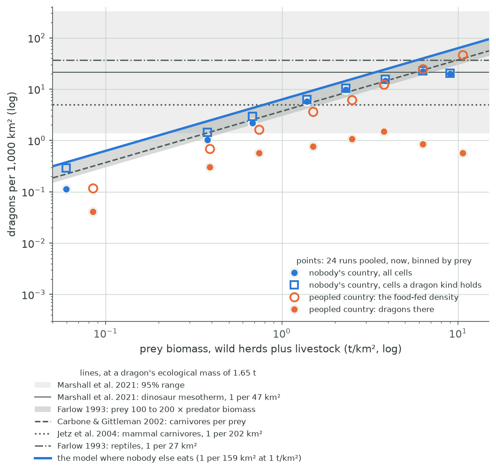
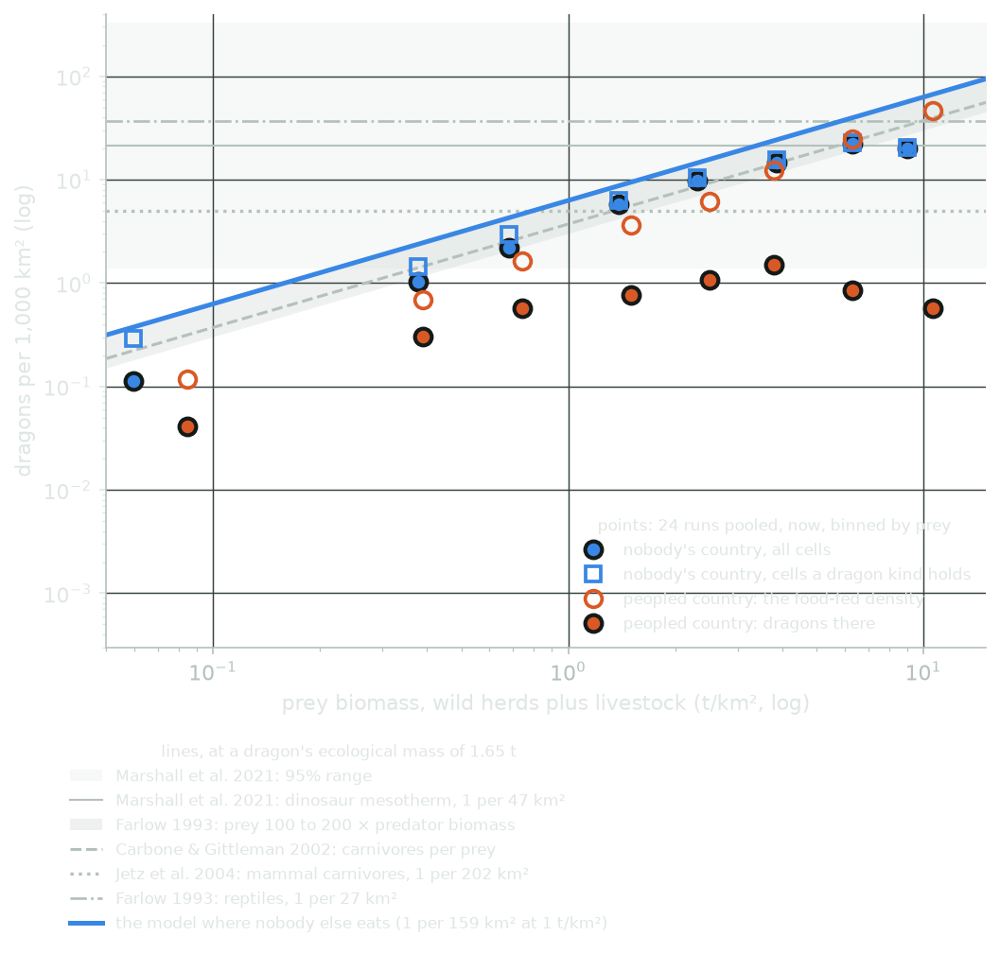
In nobody's country the occupied points (squares) follow the model's line up to the richest land. The all-cells points (dots) fall below it as occupancy falls (Section 5.3). In peopled country the food-fed points sit within a factor of two below the line, on Carbone & Gittleman's line between 0.4 and 4 t/km², and the dragons themselves sit well below it: the peoples take most of the food first, and now also kill them (Table 4).
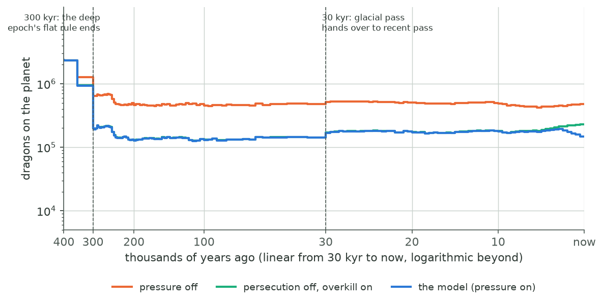
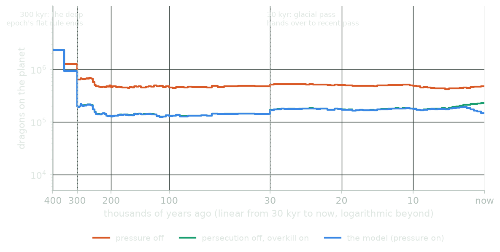
The step at 30 kyr. At 30 kyr ago the run hands over from its ice-age pass (coarse steps) to its finer recent pass. With the pressure on, the planet's dragons jump by ×1.2 at the hand-over (median over the runs; ×0.90 to ×1.6); with it off, the same runs step by only ×1.1. The step is on the empty land. Across the hand-over the food-fed density in nobody's country rises from 1.2 to 1.6 per 1,000 km² (1.2 to 1.6 with the pressure off), and its area from 31% to 31% of the land; in peopled country the food changes less (with the pressure off, farmers' country 16 to 17; with it on, farmers' 8.2 to 8.2 and herders' 2.4 to 4.2). With the pressure on, most dragons live on the empty land, so the planet's count mostly follows it; with it off, most live on peopled land and the count barely moves. The empty land's dragons rise from 0.55 to 0.89 per 1,000 km²; the food and the area together explain about 70% of that empty-land rise in dragons on a log scale, and a rise in occupancy (46% to 46%) most of the rest. The recent pass thus gives the empty land about 1.4 times the food the ice-age pass's last step gave it. Whether that is a real change between 31 and 29 kyr ago or an artefact of the hand-over needs the ice-age pass's own climate and herd fields (Section 9).
The step at 300 kyr. Before 300 kyr ago the model has no prey field (the present plates have not formed) and sets a flat density at the land's median prey. At the hand-over the planet's dragons change by ×0.50 with the pressure off (median over the runs; ×0.23 to ×3.1 by run; the "after" value is each run's first step after 300 kyr, which falls 4.0 to 50 kyr later) and by ×1.0 with it on (×0.10 to ×1.9). So on the median the flat rule is close to the food budget, a little low, but run by run it misses by up to a factor of 4.4 either way. The miss is a property of the planet, not of the roll: the four rolls of one world all sit at ×0.23 to ×0.50 and the four of another at ×3.1 to ×3.1. It also leaves out the peoples, whose pressure takes the count down at the hand-over where they are many. The "age of dragons" peak, 1,500,000 dragons at its median over runs some 10 million years ago, rests on that rule.
Now. With the pressure on, world 2a7385 falls from about 180,000 dragons at 10 kyr to 150,000 now, 84% of the fall after 5 kyr ago (180,000 then) as farming spreads. With the pressure off it holds 480,000 now, and with persecution off but the overkill kept, 230,000: on this world the overkill costs about a factor of 2.1 and persecution a further 1.6.
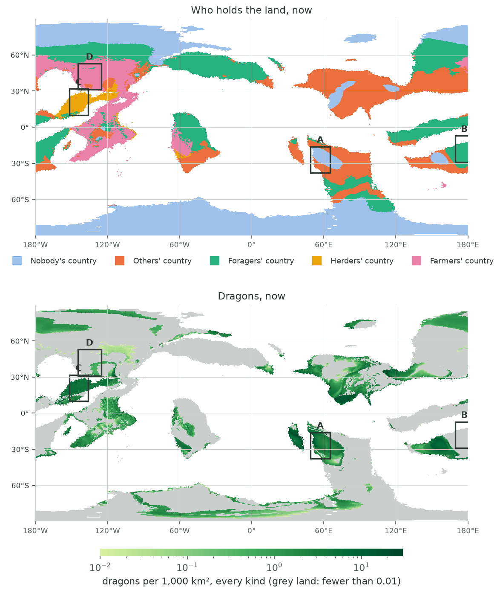
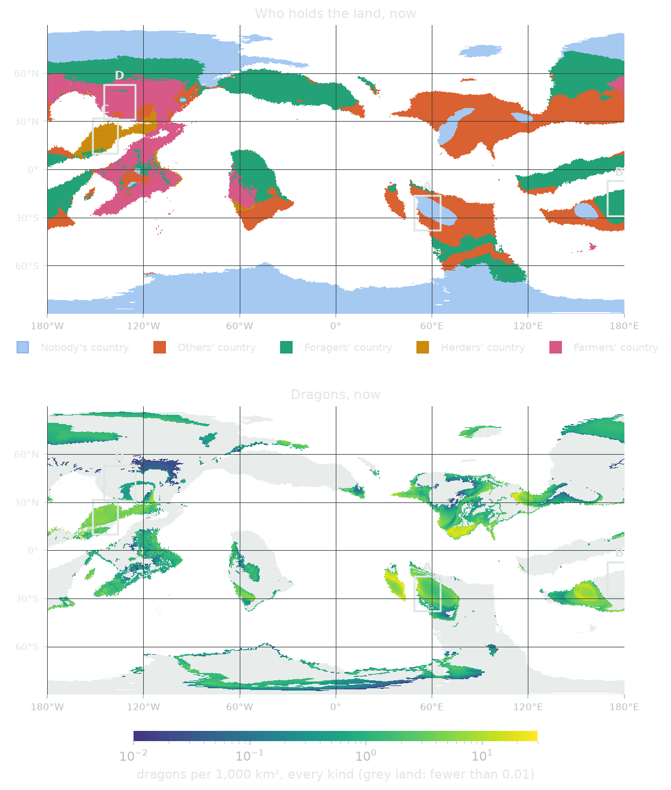
This section is an extrapolation, not a model result. A typical D&D game sits at about late-medieval technology, the 1400s or so, and the generator's history of its peoples is designed to stop at about that stage by default. It does not reach that far yet: the runs here end with peoples of an earlier stage. The table below takes the model's present-day densities by land type and settlement, then reasons about what the 1400s would change. Every step of that reasoning is stated, and the best-guess column contains a judgement of this review, not the model's.
Situations. Each land cell of every run's present is put in one of four situations:
Biomes come from the labels the generator gives each cell for its terrain and vegetation (several can apply), read in a fixed order with the first match winning: mountain, tundra, desert, wetland, forest (jungle included), grassland (steppe and open country). The remaining 9.3% of land matches none of the six and is left out of the table. Most of it is wild land far from the equator (median latitude 68°), holding 0.3 dragons per 10,000 km²; the rest is settled lowland and hills without another label.
From the model's present to the 1400s. Three steps.
| Best guess, dragons per 10,000 km² | Wild | Frontier | Farmed | City hinterland | Share of land now |
|---|---|---|---|---|---|
| Forest | 3.5 | 3.0 | 4.4 | 0.82 | 27% |
| Grassland | 19 | 5.9 | 9.0 | 0.33 | 32% |
| Desert | 21 | 26 | 12 | – | 12% |
| Tundra | 3.2 | 3.5 | – | – | 1.7% |
| Mountain | 8.4 | 8.9 | 4.6 | 0.0027 | 10% |
| Wetland | – | 4.2 | 19 | 1.6 | 7.1% |
| Share of land now | 21% | 27% | 44% | 7.9% |
Table 6. The game present, best guess: expected dragons of every kind and age per 10,000 km² (a square 100 km on a side). A dash marks a combination that fewer than half the runs hold in 30 cells or more, so that its pooled value would rest on a few worlds. Pooled over 9 runs (persecution-off arm: 6 runs at one roll, not paired with the rest).
| Biome | Wild | Frontier | Farmed | City hinterland | ||||||||
|---|---|---|---|---|---|---|---|---|---|---|---|---|
| Model | No persec. | Food | Model | No persec. | Food | Model | No persec. | Food | Model | No persec. | Food | |
| Forest | 3.5 | 6.4 | 15 | 3.0 | 2.2 | 51 | 4.4 | 8.1 | 72 | 0.82 | 15 | 170 |
| Grassland | 19 | 14 | 37 | 5.9 | 10 | 110 | 9.0 | 12 | 230 | 0.33 | 6.2 | 360 |
| Desert | 21 | 10 | 20 | 26 | 36 | 100 | 12 | 11 | 86 | 0.042† | 3.5 | 390 |
| Tundra | 3.2 | 3.6 | 7.1 | 3.5 | 5.1 | 5.6 | 2.3† | 3.0 | 5.8 | – | – | – |
| Mountain | 8.4 | 8.2 | 14 | 8.9 | 13 | 43 | 4.6 | 6.2 | 66 | 0.0027 | 0.23 | 220 |
| Wetland | – | – | – | 4.2 | 3.8 | 100 | 19 | 33 | 240 | 1.6 | 32 | 310 |
Table 7. The bracket behind Table 6, dragons per 10,000 km². Model: the model as it stands (24 runs). No persec.: persecution off, overkill and hunting kept (6 runs, roll 7000). Food: the food-fed density with the pressure off, the ceiling if every cell held dragons and nobody pressed them (24 runs). †: fewer than half the runs hold this combination in 30 cells or more. The persecution-off arm is noisy run by run: forest frontier runs from 0.55 to 6.3, grassland frontier 0.59 to 69, so the best guess inherits a factor of two or three of noise from it.
Reading the tables. Desert and grassland wild land hold the most dragons per area in the model: dragon kinds live there and nobody presses them. Wild land in the model's present is mostly far from the equator: wild grassland lies at a median latitude of 69° and wild forest at 64°, so "wild grassland" here is cold steppe, not temperate prairie; wild desert (28°) is the only wild biome at middle latitudes. The pooled values also hide a wide spread between runs: wild grassland 13 per 10,000 km² on the median run (5.4 to 54), wild desert 30 (1.5 to 64), wild forest 0.61 (0.10 to 75). Wild forest holds few: almost no dragon kind lives in forest away from people (only 37% of wild forest cells are occupied), though its food would feed 15 dragons per 10,000 km². Farmed land holds 2.3 to 19 dragons per 10,000 km² by biome under the model's rule (Table 6). Of the dragons counted, 79% are wyrmlings and young dragons and 2.6% ancients (under the default spread of ages; Section 2). A game master wanting a figure for a county of 10,000 km² can read Table 6 directly and expect most of the dragons in it to be young.
What would move these numbers most. Persecution (Section 9, item 1) moves the farmed columns by up to a factor of 1.9 (Table 7; the city hinterland, densest in people, moves most), and the food channels in hunters' country (item 1b) by more; habitat coverage (item 6) moves wild forest and grassland by up to the food column. Neither the model's own column nor the best guess has been checked against any historical record of large predators under medieval farming; we found none.
The Sword Coast, the coastal region where the best-known D&D setting's adventures most often take place, is roughly 1,500 miles north to south and 1,000 miles wide on most official maps: 2,414 km × 1,609 km = 3.88 million km². The counts below treat all of it as land.
A real region of the same size and shape. The Sword Coast is a long coast with the sea to the west, as is western Europe. A box of the same size centred on 47°N, 0.5°E runs from about 36.1°N to 57.9°N and 10.1°W to 11.1°E, 3.86 million km² on a sphere: from the Strait of Gibraltar to about the northern tip of Denmark, and from the Atlantic coasts of Ireland and Portugal to about the longitude of Munich. Much of it is sea; we have not measured how much, so the comparison is of size and shape only.
| A Sword Coast-sized area, if all of it were… | Model, pooled | Model, range over runs | Pressure off |
|---|---|---|---|
| Nobody's country, now (21% of land) | 3,200 | 760 to 5,900 | 2,800 |
| Others' country, now (28% of land) | 4,400 | 750 to 6,700 | 17,000 |
| Foragers' country, now (23% of land) | 870 | 210 to 2,400 | 7,600 |
| Herders' country, now (5.0% of land) | 9,700 | 3,900 to 24,000 | 23,000 |
| Farmers' country, now (23% of land) | 690 | 280 to 1,100 | 6,900 |
| Nobody's country, 25 kyr ago (30% of land) | 3,500 | 890 to 5,200 | 3,600 |
| Others' country, 25 kyr ago (35% of land) | 5,400 | 1,800 to 8,700 | 16,000 |
| Foragers' country, 25 kyr ago (25% of land) | 910 | 170 to 4,000 | 7,100 |
| Herders' country, 25 kyr ago (1.7% of land) | 6,600 | 1,100 to 31,000 | 13,000 |
| Farmers' country, 25 kyr ago (7.5% of land) | 4,700 | 0 to 7,100 | 13,000 |
| The headline alone, nobody else eating, dragons everywhere, on 0.6 / 1 / 3 / 7 t/km² of prey | 15,000 / 24,000 / 73,000 / 170,000 | ||
Table 8. Dragons of every kind and age in 3.88 million km², at each class's density (Table 2). The range is over the runs' own densities.
On the game-present best guess (Table 6), a region of this size would hold about 3,500 dragons if it were all farmed grassland, 1,700 if all farmed forest, and 8,100 if all wild desert. The largest dragon kind holds 43% of a run's dragons on the median (23% to 64%), so a single kind in a region is a fraction of these counts.
Is that a viable population? Marshall et al. estimate about 20,000 post-juvenile T. rex alive at any one time over 2.3 ± 0.88 million km², with a 95% interval of 1,300 to 328,000 individuals, and they reject the low end on "the loose consensus that at least thousands of individuals are needed for long-term persistence" (p. 285). Burness et al. give minimum viable populations as "frequent estimates are a few thousand to at least 10,000 individuals" (p. 14521). A Sword Coast-sized region under the model's present holds 690 to 9,700 dragons of every kind together, counting wyrmlings, by what kind of country fills it (Table 8); one kind holds a fraction of that (the largest kind 43% of a run's dragons on the median), and post-juvenile dragons fewer still. On those counts a region's dragons persist only as part of a much larger linked population. The model does treat pockets of one kind within 7,500 km of one another (five flights of 1,500 km) as one population, and lowers the viable number for long-lived kinds, but whether its test is strict enough at these counts has not been checked (Section 9, item 7). Burness et al.'s land-area lines (Section 5.4) make the same point from the other side: a land of this size has never held a top predator anywhere near a dragon's size.
The same box on a model world. Figure 6's four boxes place a Sword Coast-sized area on world 2a7385 (roll 7000, now) where one kind of country fills it most, among boxes at least 70% land. Land in a box is its land fraction × its area on the sphere.
| Box | Centre | Mostly | Land in box | Mean prey | Dragons | Food-fed | Occupied |
|---|---|---|---|---|---|---|---|
| A | 27°S, 57°E | nobody's (59%) | 3.15 M km² | 0.95 t/km² | 9,100 | 15,000 | 91% |
| B | 18°S, 177°E | foragers' (100%) | 2.81 M km² | 2.1 t/km² | 0 | 0 | 5.1% |
| C | 21°N, 144°W | herders' (94%) | 2.74 M km² | 5.4 t/km² | 10,000 | 76,000 | 86% |
| D | 42°N, 135°W | farmers' (93%) | 3.69 M km² | 1.8 t/km² | 350 | 27,000 | 23% |
Table 9. The four boxes of Figure 6. "Food-fed" is the dragons the food would feed with no pressure and dragons in every cell; "occupied" the share of the box's land any dragon kind lives on. Box B's food feeds no dragons at all, on 2.1 t/km² of prey: the peoples' hunters, who eat first, take the whole of the herds' surplus there (Section 9, item 1b).
Published setting material is not used as a target: the model is not tuned to any canonical dragon count, and none is compared here.
The form is standard; the content of each step is weak. The chain is the usual shared food budget. Farlow builds predator density the same way: predator density × mass × mass-specific intake = prey density × mass × turnover (Farlow 1993, eqs. 3 to 5, p. 172). The weaknesses are in what goes into each step: a herbivore fit fed the wrong kind of plant production, a flat offtake, one Cretaceous guild split for every world, a reptile intake law stretched 60 to 1,100 times past its data and then labelled as a reptile's, an unsourced assimilation, whole carcasses eaten, and a persecution rule whose form has support but whose size is a judgement. Section 3 shows that these choices partly cancel: a reading that follows the papers at each step gives ×1.3 of the headline, but the band around it is roughly ten either way.
Where nobody lives, the model's formula is defensible, but not for the obvious reason. The formula, 1 dragon of 1.65 t per 159 km² per t/km² of prey, sits between the mammal-carnivore lines (Carbone & Gittleman; Jetz et al.) and the reptile line (Farlow) at the prey levels where most dragons live, and inside Marshall et al.'s interval for T. rex. The realised density is lower: nobody's country holds 0.82 per 1,000 km², just under the bottom of Marshall et al.'s interval (1.4 per 1,000 km²), because most empty land is poor and much of it unheld (Section 5.3). But it is tempting to add that the dragons' prey to dragon ratio of about 130:1 "fits an animal that eats at a reptile's rate". Farlow's reasoning runs the other way (Section 5.4). If dragons eat like reptiles and still sit at a mammal guild's ratio, something other than food must hold them down; if they eat like mammals or birds, as fliers of their size plausibly must, the food alone would hold them at ×0.43 of the model's density. Seymour's measurements on estuarine crocodiles bear on this: a 200 kg crocodile produces "only 14% of that for a mammal" in burst power, and crocodiles "lack not only the absolute power for exercise, but also the endurance" of mammals (Seymour 2013, abstract, p. 1). Seymour measures burst power, not daily intake, and no paper consulted gives a daily cost of flight; but on that evidence a dragon that flies is probably not a crocodile-like ectotherm, and its intake probably lies at or above the dinosaur estimates (22% to 31% of a mammal's). Which line to use is a design decision for the world's authors (Section 9, item 3), but the label "a reptile's rate" should go either way.
Where nobody lives, what limits dragons now is poor land and habitat. The pressure is not the cause of the shortfall on empty land: over 9 runs it is near zero there. Most empty land is poor and cold, and the model's dragon kinds live on only 44% of it; 17% of the dragons' food there goes uneaten, above all in wild forest, tundra and grassland. That may be deliberate (the D&D roster's evil, colour-coded dragon kinds each have their own terrain), but it means the model's "1 per 159 km² per t/km²" applies to a minority of the land. If the world's authors want wild forest and grassland to hold dragons, the habitat model, not the food chain, is what must change.
Where peoples live, early losses come through the food, late ones through the kill. Persecution and overkill together leave 10% to 41% of the pressure-off density in peopled country now (medians, Table 3). The pressure-off arm still has the hunters eating, so with their take counted too the dragons keep less: by the rough product of Table 4, 5.4% in farmers' country and 3.6% in foragers'. Persecution now follows the owner's ruling: very slight with stone-age means, rising with tech, never fatal. The kill falls by age class, so early peoples reach the wyrmlings, hardly the young and not the adults, and the dragons' life table makes a wyrmling kill cheap. In the stone age persecution leaves 99% of the dragons in foragers' country and 85% in farmers' (Table 4); with renaissance tech it leaves 16% in farmers' country. The form of this rule has support. Large carnivores' slow reproduction leaves them "poorly able to respond to persecution" (Ripple et al. 2014, p. 1241484-1). Among carnivores, slow life history predicts extinction risk where people are dense, at 10 or more per km² (Cardillo et al. 2004, Tables 2–3, pp. 0911–0912). In long-lived animals, growth rests on the long juvenile and adult stages, not on the first year (Crouse et al. 1987, p. 1417). Its size does not have support. KILL_Q is set so that a cell of dense renaissance farmers (10 per km²) keeps 10% of its dragons to persecution alone, and that is a judgement. (Farmed land is thinner: its median cell holds 1.6 people per km² in forest and 1.9 in grassland, against 17 in a city's grassland hinterland. Persecution in farmers' country as a whole leaves 16%.) The evidence read does not pin it either way. Ripple et al.'s tiger and lion hold 18% and 17% of their historical ranges (Table 1). That is a share of range, not of density, but it shows that large carnivores are pushed out of most farmed land, so a harsher setting with local extirpation would be defensible. Their large carnivores also still hold on average 47% of their ranges (p. 1241484-1), and some species tolerate much more human land use than others (p. 1241484-6), so a milder setting is defensible too. "Never fatal" does not constrain the choice: the rule's form never reaches zero at any setting (Section 2, step 7). The owner can now move it in the viewer. The tech level comes from a calendar of eras, a proxy for what each people actually knows (Section 9).
What persecution no longer explains is the early loss. At 25 kyr ago foragers' country keeps 16% of the pressure-off density, and nearly all of that loss is overkill of the wild herds (13% left). On top of it the hunters' own take, which is in every arm, leaves only 18% of the herds' surplus for the dragons. Three choices make these food channels this strong. First, the setting's hunting peoples are dense: halflings at 12 people per km², goblins at 5. Real foragers live at about 0.03 to 0.13 people per km². Hamilton et al. fit the area a forager group uses, ln(A/km²), against the log of its size (all foragers: exponent 0.70, constant 4.44 in Table 1, p. 4767; the same fit is labelled 0.70x + 4.14 on Fig. 1, p. 4766). Groups of 25 to 1,000 then live at 0.03 to 0.09 people per km² with the table's constant, or 0.04 to 0.13 with the figure's, around a scatter of about two orders of magnitude (r² = 0.24). Their 2009 fit, of area against a group's total body mass (Fig. 2, p. 12257), gives 0.03 to 0.11 people per km² for the same groups, taking 45 to 55 kg a person (our assumption). Zhu et al. find that a meat-heavy diet goes with low density ("high fractions of meat in the diet, leading to greatly reduced population density due to trophic inefficiency", Zhu et al. 2021, abstract). So dense peoples who eat half their food as big game are what the data rule out. Second, every tonne the hunters take comes out of the dragons' cattle-sized prey. Third, the flat 60% overkill ignores Sandom et al.'s main finding: losses depend on how long people and fauna lived together, from about 2% of species where they co-evolved to about 46% where modern humans arrived first (Fig. 3, p. 5). On this world the peoples evolved beside the herds. The options are left to the owner (inbox draft "forager offtake overstated"); this round changes none of them.
A region's single kind falls short of a viable population. On the model's present a Sword Coast-sized region holds 690 to 9,700 dragons of all kinds and ages (Table 8), a single kind a fraction of that, where the literature puts a viable population at thousands (Marshall et al. 2021, p. 285; Burness et al. 2001, p. 14521). Flying dragons linked across continents can be one population; but the model's regional counts make dragons a planet-wide metapopulation, not a regional fauna, and the game present should be read that way.
The deep past is set by a rule, not a budget. With the pressure off, the food budget gives ×0.50 the flat rule's dragons at the 300 kyr hand-over on the median, so the rule is about right on average; but run by run it misses by up to a factor of 4.4, and it leaves the peoples out. The "age of dragons" is real in the model's story, but its size in any one world is a rule's, not its land's.
Two kinds of limitation bound this paper's conclusions: those of the analysis (how the runs were sampled and summarised) and those of the model itself (where its chain departs from what the literature supports). The first set says how far to trust the numbers as a description of the model; the second, how far to trust the model as a description of a world with dragons in it.
Here the literature is the judge. Each item says what in the model is wrong or weak, the evidence and where it is, and which way a revision would move dragon numbers, and by how much where that can be computed. The order is by how much each matters for the numbers in this paper.
| # | Change | Evidence (paper, location) | Effect on dragon numbers |
|---|---|---|---|
| 1 | Source the size of the persecution, and feed it the peoples' real techs. Done in round 3: the hand-set "1 per 5,000 km²" is gone. Persecution is now a kill against the dragons' slow breeding, by age class, growing with the peoples' numbers, means and tech level, and never species-ending. Still open: the kill's size (KILL_Q, set so that dense renaissance farmers keep 10%); the vulnerabilities by age class; and the tech level, which comes from a calendar of eras rather than from what each people knows (inbox draft "persecution means from real techs"). | The form: Ripple et al. 2014 (p. 1241484-1), Cardillo et al. 2004 (Tables 2–3, pp. 0911–0912), Crouse et al. 1987 (p. 1417). No paper consulted gives a kill rate for large predators under pre-industrial peoples. Ripple et al.'s ranges (tiger 18%, lion 17% of their historical ranges, Table 1) would allow a harsher setting. | Persecution alone, from the persecution-off arm: 6.1 times more dragons in farmers' country now if it were removed, 1.5 times more in foragers' (6 runs, Section 5.2). The owner can now set it in the viewer: one multiplier for the early eras and one for the late. |
| 1b | Check the food channels in hunters' country. Before the late eras most of the loss comes from overkill and the hunters' take (Table 4). The D&D hunting peoples are 10 to 100 times denser than real foragers and eat half their food as big game; every tonne they take comes out of the dragons' prey; and the flat 60% overkill ignores how long people and fauna lived together. | Hamilton et al. 2007 (Table 1, p. 4767); Zhu et al. 2021 (abstract; Fig. 5 caption: their model's mean meat share is 55% where hunting dominates, 22% where gathering does); Sandom et al. 2014 (Fig. 3, p. 5). | More dragons in early peopled country, above all in foragers' country, where all three channels together leave 2.3% at 25 kyr ago. The options are in the inbox draft "forager offtake overstated"; this round changes none of them. |
| 2 | Feed McNaughton's fit above-ground production. The model feeds it whole-plant herb NPP, roots included. | McNaughton et al. 1989: "Only processes occurring above ground were included" (p. 142); slope 1.52 (p. 143). | Fewer dragons on grassland: × f1.52 with f the above-ground share; ×0.58 to ×0.25 for f from 0.7 to 0.4. A source for f is wanted. |
| 3 | Say which intake law the dragons follow, and why. The reptile fit, stretched 60 to 1,100 times past its heaviest animal, behaves as a mesotherm's (37% of a mammal at 1.65 t). The model's own description calls it "a reptile's rate". Label the 2.7 t as the all-ages mean, not a 1.65 t dragon's intake (4.1 t). | Nagy et al. 1999, p. 262 (extrapolation widens the interval); Nagy 2005, p. 1622 (±70%) and p. 1624 (growth not counted); McNab 2009, pp. 12185, 12187 (varanids and, on his own estimate, dinosaurs at 22% of mammals; he reports Barrick & Showers's 31% as similar); Marshall et al. 2021, p. 284 ("midway" physiology). | Depends on the choice: McNab's own dinosaur estimate, on his varanid line, ×1.9; Barrick & Showers's 31% ×1.4; a mammal's or bird's ×0.43. Counting growth: fewer, size unknown. |
| 4 | Source the assimilation (85%) and stop counting whole carcasses as eaten. | Carbone et al. 2007: assimilation 0.66 (p. 364); "only a proportion of large-vertebrate prey are consumed (65%–91% depending on their mass)" (p. 367). Nagy et al. 1999's own conversion gives 5.04 kJ per g fresh meat against the model's 5.95 (pp. 263–264). | Fewer: ×0.78 for assimilation, ×0.65 to ×0.91 for carcass use; together down to about ×0.5. |
| 5 | Tie the yearly offtake to the herds' production rather than a flat 10% of standing biomass. | Coe et al. 1976, Table 1 (pp. 344–345): production 0.085 to 0.26 of biomass a year; Farlow 1993, eq. 6 (p. 172): 0.94 M−0.28. | Linear in the offtake. If the guild takes half of production (as now, on average), little changes on average, but small-grazer country gains dragons and elephant country loses them. |
| 6 | Let dragon kinds' habitats cover more of the wild forest, grassland and rich open land, or say why they do not; and trace why occupied rich cells reach only part of their food. Dragon kinds live on 44% of nobody's land, and 17% of the dragons' food there lies where no kind lives (Section 5.3). | The model's own result; no paper says where dragons should live. A design question for the world's authors. | More dragons in nobody's country, up to about the food-fed density: 1.7 times today's pooled density if every cell were held (Section 5.3). |
| 7 | Make the dragons' density in peopled country face a viable-population test. A Sword Coast-sized area under foragers or farmers holds 870 to 690 dragons of every kind together. | Marshall et al. 2021: "the loose consensus that at least thousands of individuals are needed for long-term persistence" (p. 285). Burness et al. 2001: "frequent estimates are a few thousand to at least 10,000 individuals" (p. 14521). | Fewer, locally to none: such pockets persist only as part of a larger linked population. The model already treats pockets of one kind within 7,500 km as one population and lowers the viable number for long-lived kinds; whether that test is strict enough at these counts is untested. |
| 8 | Use one metabolic exponent for the guild split and the dragons, and let wyrmlings and young dragons (under 1 t) eat in the smaller classes. | Carbone & Gittleman 2002, p. 2274 (fitted −0.66); Carbone et al. 2007, Table 1 and p. 364 (0.79 across carnivores, 0.6 within large-prey hunters); Carbone et al. 2011, p. 2683 (juvenile and sub-adult T. rex "may have been relatively abundant"; Table 1 lists adult masses) and p. 2685 (age classes of the larger species were included in the grouping, so how juveniles enter the shares is not stated). | The exponent: ×0.59 (b = 0.6) to ×1.6 (b = 0.889). Young dragons in the smaller classes: about ×1.2 (they eat 16% of the dragons' food). |
| 9 | Make overkill depend on how long the fauna lived beside people, not a flat 60% of wild biomass. | Sandom et al. 2014, Fig. 3 (p. 5): median species lost about 2% where people and fauna co-evolved, about 23% under archaic humans, about 46% where modern humans arrived first; "universally low extinctions in sub-Saharan Africa (maximum 13%)" (p. 6). Species, not biomass. | More dragons in long-peopled regions. The overkill channel alone, measured on 6 runs: 6.2 times in foragers' country (1.7 to 13 by world) and 2.8 in others'; in farmers' country it is within the arm's noise (Section 5.2). |
| 10 | Lower the dense "hunter" peoples' game take. Halflings at 12 people per km² and goblins at 5 are treated as half-game eaters. | Hamilton et al. 2007 (Table 1, p. 4767; Fig. 1, p. 4766) and 2009 (Fig. 2, p. 12257): real foragers live at about 0.03 to 0.13 people per km². | More dragons in foragers' country: the peoples take 84% of the supply there now. |
| 11 | Give the deep epoch a food budget. Before 300 kyr ago the model sets a flat density at the land's median prey. | The model's own hand-over (Section 5.5). | About right on average, wrong in a given world: with the pressure off the count changes by ×0.50 at the hand-over (median over runs), but by ×0.23 to ×3.1 run by run. A budget would move each world's deep-time peak by up to that much, either way. |
| 12 | Decide where the dragons' unused share goes, and whether peoples press the smaller predators too. Today the share the pressure leaves uneaten feeds nobody, and the smaller predators keep their full share in farmers' country. | The model's own budget (Section 5.2); Ripple et al. 2014 on "empty forests" where people take the prey (p. 1241484-6). | None directly on dragons. |
Table 10. Model revisions, with evidence and expected effect. Factors are on dragon density where nobody else eats unless stated.
This is round 3 of the paper. Its runs were made on the generator after three changes, so they differ from round 2's.
Since the runs, the viewer has gained two settings, "how hard peoples press dragons and giants", one for the early eras and one for the late. Each multiplies the kill; the paper's numbers are at the default, ×1.
Every detail is taken from the published PDF. A DOI is given where the PDF prints it; "DOI not printed" marks the five that print none (we add none the article does not print). Issue numbers are given where the PDF or its cover sheet prints them.
Consulted, not cited. The flight papers (Witton & Habib 2010, Sato et al. 2009, Ksepka 2014, Chatterjee, Templin & Campbell 2007, Alexander 2007) and Field et al. 2013 (bird mass from the skeleton). They concern how big a flier can be and how it flies; none gives a field metabolic rate or a cost of flight per day, which is what dragon numbers would need. Section 3 therefore brackets flight with the only rate consulted that includes flying animals, Nagy et al.'s bird line.
Read in abstract only. Woodroffe, R. (2000). Predators and people: using human densities to interpret declines of large carnivores. Animal Conservation 3 (2), 165–173. No open copy was found; only the publisher's abstract was read. It reports strong associations between high human density and the loss of large-carnivore populations, and argues that regional differences reflect what local people do rather than the carnivores. Its figures are not used here and are UNVERIFIED.